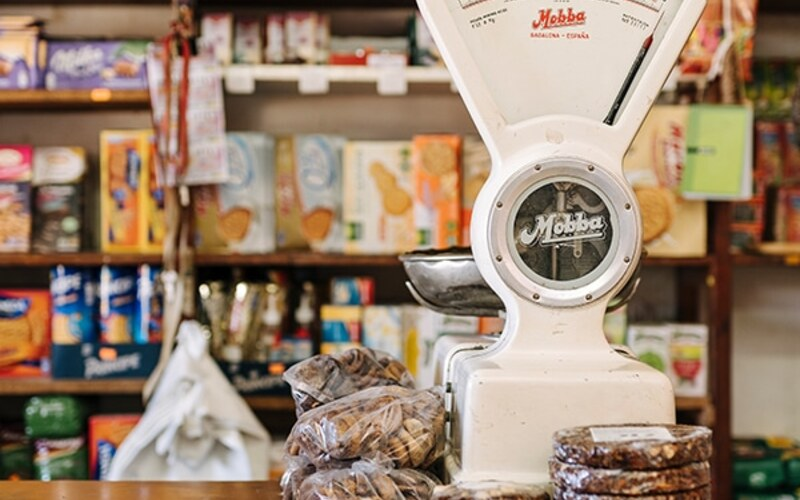
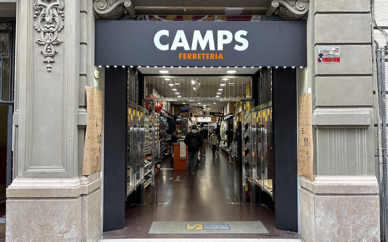
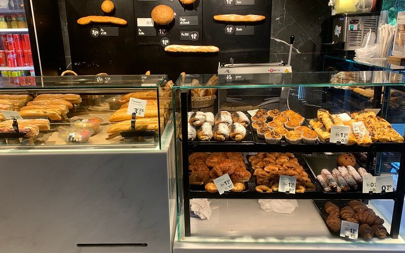

Evitem que els comerços de barri desapareguin i recuperem els locals per a la comunitat.



Tens drets que potser no coneixes. Pas a pas: clàusules, IPC 2026, negociació i dret de tempteig.
Llegir la guia →Traspàs, relleu generacional, model cooperatiu... Les opcions reals que té un comerciant en risc.
Llegir la guia →Barcelona Activa, Federació de Comerç, PIMEC, Sindicat de Llogateres i l'associació del teu barri.
Veure recursos →Si estàs en risc de tancament, posa't en contacte. T'orientem i t'acompanyem. Sense compromisos.
Contactar →